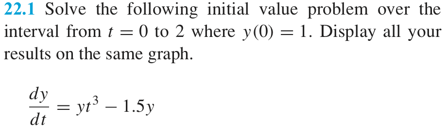
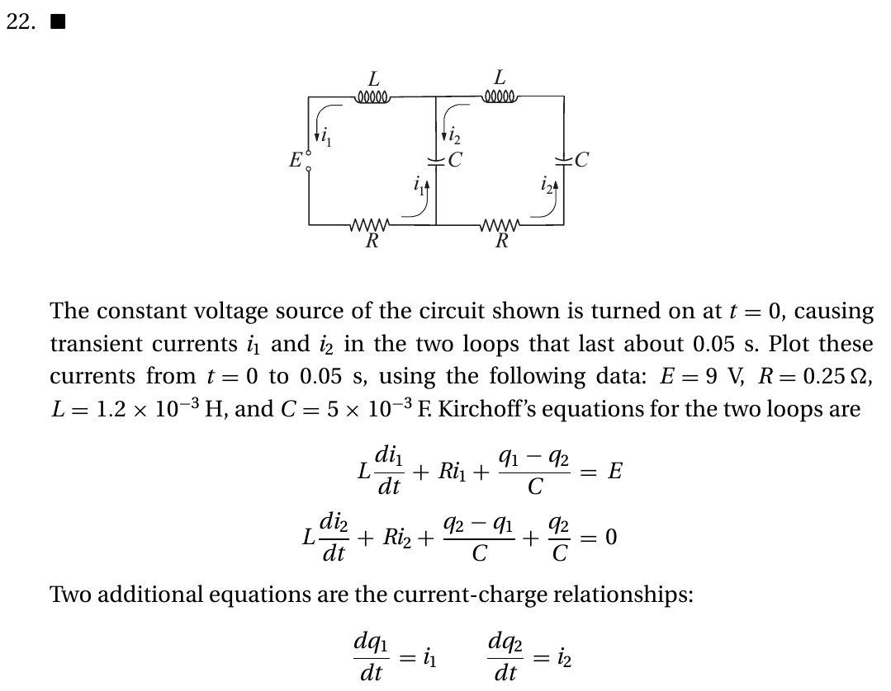
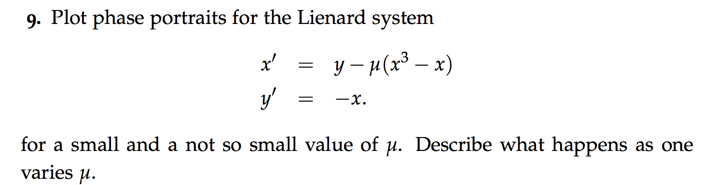
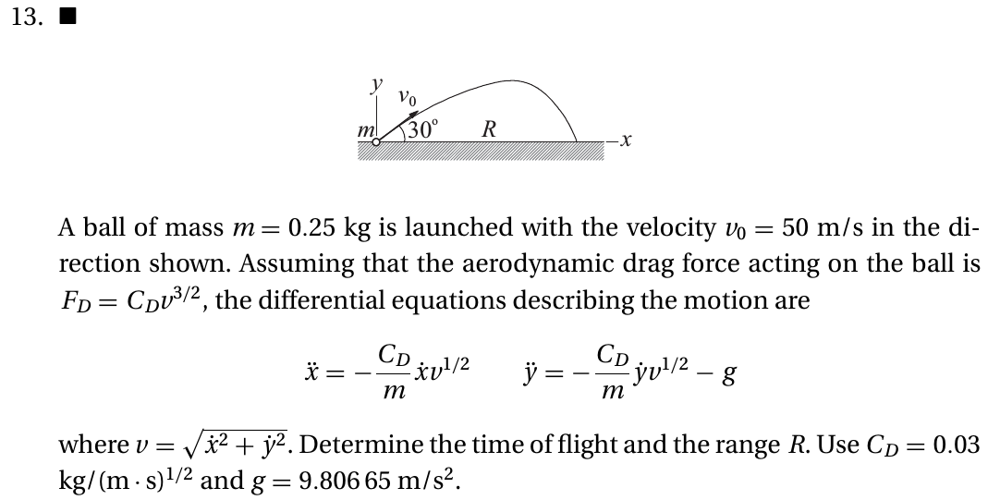
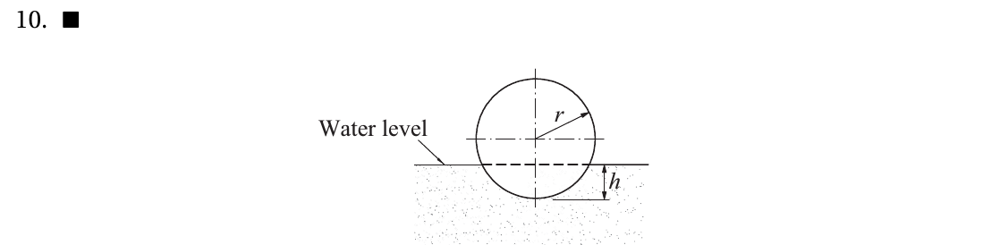
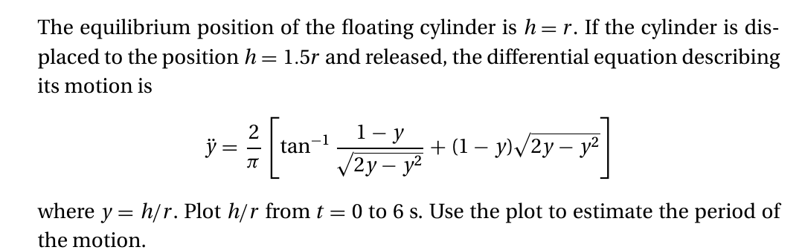
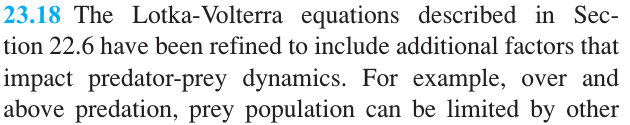
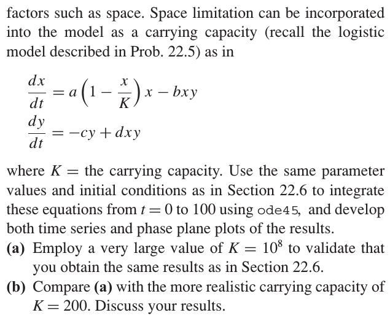
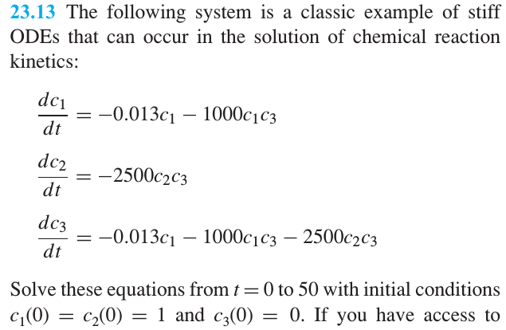
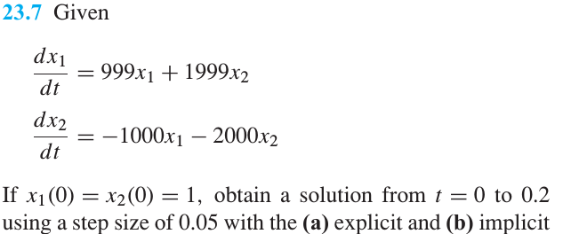

IVP: Initial value problems#
https://github.com/hannorein/rebound
This notebook shows simplified approaches to solve ordinary differential equations with given initial conditions.This is called an Initial Value Problem.
In general, what we want to solve is the ordinary differential equation of first-order of the form
where \(y\) represents, for instance, the system state, and \(f(y, t)\) is the function that describes the change in time and, in general, depends both on the current system state and the time.
When you have a higher order ODE, you can introduce auxiliary derivatives to recover the one order formulation. If you an n-order differential equation, you will get a system like
As an example, let’s start with the second Newton equation for a body in free falling under a linear damping viscous force,
In this case, we can use the first position time derivative (the velocity) as an auxiliary function, and then we get \(\vec y = [z, v]\) and \(d\vec y /dt = \vec f(t, \vec y) = [v, -g - bv]\) (actually this can also be written as a matrix equation and its eigen-values will have important meaning.
Exercise: Transform the following third order equation into a system of three linear equations
YOUR ANSWER HERE
Euler method#
Let’s take the general equation and check that the derivative can be approximated as
for a sufficiently small time step \(\delta t\) . If you discretize the time in steps of size \(\delta t\), you can identify the time \(t + \delta t\) as the next time after time \(t\), so you can write the next value for \(y\) in terms of the current one as
This is the so-called Euler Method, and you can interpret it as constructing a straight line between the two points. See the next figure, from Chapra. The local error is of order \(\delta t^2\) because we are ignoring first that term in the series expansion of \(y(t+\delta t)\).
Basically you need to know the initial position and then you can iterate to obtain later values:
iter = 0, time = \(0\), \(y(0)\)
iter = 1, time = \(\delta t\), \(y(\delta t) = y(0) + \delta t f(y(0), 0)\)
iter = 2, time = \(2\delta t\), \(y(2\delta t) = y(\delta t) + \delta t f(y(\delta t), \delta t)\)
iter = 3, time = \(3\delta t\), \(y(3\delta t) = y(2\delta t) + \delta t f(y(2\delta t), 2\delta t)\)
…
{kind=link}
Although the Euler method is simple to implement, its error is large and sometimes it might be unstable.
Example comparing the Euler method with the scipy function#
Following Chapra, let’s solve the following ordinary differential equation by means of the Euler method,
whose solution is
Let’s solve it from \(t =0\) to \(t=4\) in steps \(\delta t = 1\). The initial condition is \(y=2\) when \(t=0\). Your task is to solve the differential equation and to compare with the theoretical solution.
To do so, please first use the solve_ivp function from scipy. You will also need to define a function, called fderiv, that returns the derivate of the function and receives the time and the current value of \(y\). Once those functions are defined defined, use them to plot the numerical and the theoretical solution.
The official docs for the modern method to use from scipy to solve a system of ordinary differential equations is found at https://docs.scipy.org/doc/scipy/reference/generated/scipy.integrate.solve_ivp.html#scipy.integrate.solve_ivp and https://docs.scipy.org/doc/scipy/reference/integrate.html. Please go read it and then come back to try it.
# Simple example for scipy.integrate.solve_ivp
import numpy as np
from scipy.integrate import solve_ivp
def fderiv(t, y):
return 4*np.exp(0.8*t) - 0.5*y
def ytheo(t):
return 4*(np.exp(0.8*t) - np.exp(-0.5*t))/1.3 + 2*np.exp(-0.5*t)
def solve_system(T0, TF, Y0, DT):
# solve using scipy
sol = solve_ivp(fderiv, t_span=[T0, TF], y0=[Y0], t_eval=np.arange(T0, TF+DT, DT))
print(sol)
print(sol.t)
print(sol.y)
# solve using euler
t_euler = np.arange(T0, TF+DT, DT)
y_euler = np.zeros_like(t_euler)
y_euler[0] = Y0
for ii in range(0, len(y_euler)-1):
y_euler[ii+1] = y_euler[ii] + DT*fderiv(t_euler[ii], y_euler[ii])
# Plot
%matplotlib inline
import matplotlib.pyplot as plt
import seaborn as sns
sns.set()
sns.set_context("poster")
fig, ax = plt.subplots()
ax.plot(sol.t, sol.y[0], '*', label=f"Scipy ivp")
#ax.plot(sol.t, sol.y[0], '-*', label="Scipy ivp, DT=1.0")
# theoretical
t = np.linspace(T0, TF, 100)
ax.plot(t, ytheo(t), '-', label="Theoretical")
# euler
ax.plot(t_euler, y_euler, '-s', label='Euler')
# activate legend
ax.legend()
# Print differences
print(f"Diff Scipy: {ytheo(sol.t) - sol.y}")
print(f"Diff Euler: {ytheo(t_euler) - y_euler}")
solve_system(T0=0.0, TF=4.0, Y0=2.0, DT=0.5)
message: The solver successfully reached the end of the integration interval.
success: True
status: 0
t: [ 0.000e+00 5.000e-01 1.000e+00 1.500e+00 2.000e+00
2.500e+00 3.000e+00 3.500e+00 4.000e+00]
y: [[ 2.000e+00 3.751e+00 6.195e+00 9.706e+00 1.484e+01
2.243e+01 3.368e+01 5.040e+01 7.535e+01]]
sol: None
t_events: None
y_events: None
nfev: 26
njev: 0
nlu: 0
[0. 0.5 1. 1.5 2. 2.5 3. 3.5 4. ]
[[ 2. 3.75147098 6.19466434 9.70596322 14.83799037 22.42925878
33.67829876 50.40237392 75.34536894]]
Diff Scipy: [[ 0.00000000e+00 5.03220399e-05 -3.29598833e-05 1.07871557e-03
5.93153372e-03 -2.24517548e-03 -1.12699452e-03 9.39805657e-03
-6.40633115e-03]]
Diff Euler: [0. 0.2515213 0.58598198 1.04947303 1.71051138 2.67089086
4.08196751 6.16901602 9.2676021 ]
Exercise#
{kind=link}
%matplotlib inline
import numpy as np
from scipy.integrate import solve_ivp
import matplotlib.pyplot as plt
import seaborn as sns
sns.set()
sns.set_context("talk")
def fderiv(t, y):
return y*t**3 - 1.5*y
def solve_system(T0, TF, Y0, DT):
# solve using scipy
sol = solve_ivp(fderiv, t_span=[T0, TF], y0=[Y0], t_eval=np.arange(T0, TF+DT, DT))
# Plot
fig, ax = plt.subplots()
ax.plot(sol.t, sol.y[0], '-*', label=f"Scipy ivp, {DT=}")
# activate legend
ax.legend()
solve_system(T0=0.0, TF=2.0, Y0=1.0, DT=0.02)
Exercise#
The logistic equation allows to simulate , in a simple manner, the dynamics of a given population that grows proportionally to its current amount \(N\) but decreases also due to competition. Is written as $\(\frac{dN}{dt} = \dot{N} = rN\left(1 - \frac{N}{K}\right),\)\( first suggested by Verhulst in 1838. Here the parameter \)r\( is related to the reproduction rate and \)K\( to the competition or saturation. Solve the system for several \)r\( and \)K$ values.
%matplotlib inline
import numpy as np
from scipy.integrate import solve_ivp
import matplotlib.pyplot as plt
import seaborn as sns
sns.set()
sns.set_context("talk")
def fderiv(t, y, r, k):
# YOUR CODE HERE
raise NotImplementedError()
def solve_system(T0, TF, Y0, DT, r, k):
# YOUR CODE HERE
raise NotImplementedError()
solve_system(T0=0.0, TF=2000.0, Y0=3.0, DT=0.2, r=0.01, k=10)
solve_system(T0=0.0, TF=200.0, Y0=3.0, DT=0.2, r=0.1, k=10)
solve_system(T0=0.0, TF=200.0, Y0=3.0, DT=0.2, r=1.1, k=10)
solve_system(T0=0.0, TF=2000.0, Y0=3.0, DT=0.2, r=0.9, k=3)
---------------------------------------------------------------------------
NotImplementedError Traceback (most recent call last)
Cell In[3], line 17
13 def solve_system(T0, TF, Y0, DT, r, k):
14 # YOUR CODE HERE
15 raise NotImplementedError()
---> 17 solve_system(T0=0.0, TF=2000.0, Y0=3.0, DT=0.2, r=0.01, k=10)
18 solve_system(T0=0.0, TF=200.0, Y0=3.0, DT=0.2, r=0.1, k=10)
19 solve_system(T0=0.0, TF=200.0, Y0=3.0, DT=0.2, r=1.1, k=10)
Cell In[3], line 15, in solve_system(T0, TF, Y0, DT, r, k)
13 def solve_system(T0, TF, Y0, DT, r, k):
14 # YOUR CODE HERE
---> 15 raise NotImplementedError()
NotImplementedError:
Systems of Ordinary Differential Equations#
Previously we studied systems where there was only one interesting variable so the differential equation describe only changes on that variable. There are systems where the state is described by two or more variables. In this case, we have several differential equations, like the following (see the SIR model)
where \(x\) and \(y\) are variables that describe the system state and \(f_1\) and \(f_2\) are the functions describing their derivatives. To solve this system and improve the notation we can think of \(x\) and \(y\) as the components of a state vector called, for example, \(\vec s = [x, y]\). Also, the function \(f_1\) and \(f_2\) can be seen as the components of a vector, let’s call it \(\vec f = [f_1, f_2]\). By using this , we can rewrite the system as
Solving this system is similar to what we did with the Euler, only that now everything is vectorial, but the same basic equation applies:
Therefore, you need to define a function to model \(\vec f\) that receives the state vector \(\vec s\), the current time, and returns the derivatives.
# example for fderiv, adapt to your own problem. It now returns a vector.
# You can visualize this code in pythontutor, with python 3.6 with anaconda
import numpy as np
def fderiv(t, y):
return np.array([-y[0]+2*y[1], y[0]])
x, y = fderiv(0.3, [2, 4])
print(x)
print(y)
Exercise (From Chapra): Projectile, adding a stopping condition#
(22.6) Suppose that a projectile is launched upward from the earth’s surface. Assume that the only force acting on the object is the downward force of gravity. Under these conditions, a force balance can be used to derive
where \(v =\) upward velocity (m/s), \(t =\) time (s), \(x =\) altitude (m) measured upward from the earth’s surface, \(g(0) =\) the gravitational acceleration at the earth’s surface (\(\simeq 9.81\) m/s\(^2\)), and \(R =\) the earth’s radius (\(\simeq 6.37\times 10^6\) m). Recognizing that \(dx/dt = v\), use scipy method to determine the maximum height that would be obtained if \(v(t = 0) = 1500\) m/s.
%matplotlib inline
import matplotlib.pyplot as plt
from scipy.integrate import solve_ivp
import seaborn as sns
sns.set()
sns.set_context("paper")
def fderiv(t, y, G, R):
x, v = y
return np.array([v, -G*R**2/(R+x)**2])
#return np.array([y[1], -G*R**2/(R+y[0])**2])
def solve_system(T0, TF, Y0, DT, G, R):
T = np.arange(T0, TF+DT, DT)
sol = solve_ivp(fderiv, t_span=[T.min(), T.max()], t_eval=T, y0=Y0, args=(G, R))
fig, ax = plt.subplots(1, 2)
ax[0].plot(sol.t, sol.y[0], label=r"$y(t)$")
ax[1].plot(sol.t, sol.y[1], label=r"$v_y(t)$")
ax[0].set_xlabel(r"$t$ [s]")
ax[0].set_ylabel(r"$y(t)$ [m]")
ax[0].legend()
return sol.t[-1], np.max(sol.y[0])
solve_system(T0=0.0, TF=350, Y0=[0.0, 1500], DT=0.1, G=9.81, R=6.37e6)
Let’s add an event to stop the time evolution
%matplotlib inline
import matplotlib.pyplot as plt
from scipy.integrate import solve_ivp
import seaborn as sns
sns.set()
sns.set_context("paper")
def fderiv(t, y, G, R):
x, v = y
return np.array([v, -G*R**2/(R+x)**2])
#return np.array([y[1], -G*R**2/(R+y[0])**2])
# With event
#def hitground(t, y) :
def hitground(t, y, G, R) :
return y[0]
hitground.terminal = True # stops if hitground == 0
hitground.direction = -1 # only when going down
def solve_system(T0, TF, Y0, DT, G, R, event=None):
T = np.arange(T0, TF+DT, DT)
sol = solve_ivp(fderiv, t_span=[T.min(), T.max()], t_eval=T, y0=Y0, args=(G, R), events=hitground)
fig, ax = plt.subplots(1, 2)
ax[0].plot(sol.t, sol.y[0], label=r"$y(t)$")
ax[1].plot(sol.t, sol.y[1], label=r"$v_y(t)$")
ax[0].set_xlabel(r"$t$ [s]")
ax[0].set_ylabel(r"$y(t)$ [m]")
ax[0].legend()
return sol.t[-1], np.max(sol.y[0])
solve_system(T0=0.0, TF=350, Y0=[0.0, 1500], DT=0.1, G=9.81, R=6.37e6, event=hitground)
Exercise#
Compute the total flying time and the maximum height (normalized by \(R\)) as a function of \(G \in [0.1g, 0.2g, \ldots, 10g ]\), with \(g = 9.81\)
# YOUR CODE HERE
raise NotImplementedError()
Exercise#
A parachutist is under free-fall and under linear viscous damping modeled as
where \(m\) is the mass, \(b\) is the damping constant, and \(v\) is the vertical velocity. How does \(b\) affects the final equilibrium velocity? The final equilibrium velocity happens when there is no acceleration, that is, when \(ma = 0 = -mg -mbv_f\), so
Show that numerically as way to calibrate the method. Create a function that receives the value of \(b\) and returns the finla velocity. Notice that you will need to simulate the system for a very long time (or, much better, use an event as we will show later). Plot \(v_f\) versus \(b\). Use \(M = 60.7\) kg and \(G = 9.81\) m/s\(^2\).
%matplotlib inline
import numpy as np
from scipy.integrate import solve_ivp
import matplotlib.pyplot as plt
import seaborn as sns
sns.set()
sns.set_context("talk")
def fderiv(t, y, m, b, g):
# YOUR CODE HERE
raise NotImplementedError()
def final_vel(m, b, g):
# YOUR CODE HERE
raise NotImplementedError()
final_vel = np.vectorize(final_vel)
def solve_plot():
# YOUR CODE HERE
raise NotImplementedError()
solve_plot()
# TODO: Decouple plot and simulation
# TODO: Normalize the system and the plot
Phase plane#
The phase plane allows to study the solution of a differential equation from a geometric point of view. It basically is the plot of the derivative of a function and the function itself, that is, plotting \(\dot x \) versus \(x\). You have two options:
Solve the systems and plot the data.
Use a geometric point of view where you focus on the derivatives and no solution is computed.
Predator prey model#
The Lokta-Volterra equation is a non-linear model for the interaction between a population of preys and predators. The simplest version is as follows:
where \(x\) and \(y\) are the number of prey and predators, respectively, \(a\) the prey growth rate, \(c\) the predator death rate and \(b\) and \(d\) characterizes the effect of the interaction.
Solve the system for the following parameters and plot the solution and also plot \(y\) as a function of \(x\) (this is called the phase plane, more on this later): \(a = 1.2, b = 0.6, c = 0.8, d = 0.3\). Take the initial conditions as \(x(0) = 2\) and \(y(0) = 1\), integrate from \(t= 0\) to \(50\), with \(\delta t = 0.0625\).
from scipy.integrate import solve_ivp
import numpy as np
# Global constants could be removed using a multiarg function
A=1.2
B=0.6
C=0.8
D=0.3
X0=2
Y0=1
T0=0
TF=50
DT=0.0625
def fderiv(t, y):
return np.array([A*y[0] - B*y[0]*y[1], -C*y[1] + D*y[0]*y[1]])
sol = solve_ivp(fderiv, t_span=[T0, TF], t_eval=np.arange(T0, TF+DT, DT), y0=[X0, Y0])
%matplotlib inline
import matplotlib.pyplot as plt
import seaborn as sns
sns.set()
sns.set_context("poster")
fig, ax = plt.subplots(1,2, figsize=(14, 6))
ax[0].plot(sol.t, sol.y[0], label=r"Prey")
ax[0].plot(sol.t, sol.y[1], label=r"Predator")
ax[0].set_xlabel(r"$t$[s]")
ax[0].set_ylabel(r"$x(t), y(t)$")
ax[0].legend()
ax[1].plot(sol.y[0], sol.y[1])
ax[1].set_xlabel(r"$x$")
ax[1].set_ylabel(r"$y$")
# Can you compoute the critical points?
Example : Lorenz model#
A famous model showing chaotic behavior is the climate model proposed by Lorenz,
Solve the model for two very close initial conditions. And compare. Do you note something special? Also, for one of those initial conditions, plot the phase portrait in 2D and 3D. Use \(a=10, b=8/3, r=28, x(0) = y(0) = z(0) = 5\), integrate from \(t = 0\) to 20, and use \(\delta t = 0.03125\).
# Lorenz model
from scipy.integrate import solve_ivp
import numpy as np
A=10.0
B=8.0/3.0
R=28.0
X0=5
Y0=5
Z0=5
T0=0
TF=20
DT=0.03125
def fderiv(t, y):
return np.array([-A*y[0] + A*y[1],
R*y[0] -y[1] - y[0]*y[2],
-B*y[2] + y[0]*y[1]])
sol1 = solve_ivp(fderiv, t_span=[T0, TF],
t_eval=np.arange(T0, TF+DT, DT),
y0=[X0, Y0, Z0])
sol2 = solve_ivp(fderiv, t_span=[T0, TF],
t_eval=np.arange(T0, TF+DT, DT),
y0=[X0+0.0001, Y0, Z0])
%matplotlib inline
import matplotlib.pyplot as plt
import seaborn as sns
sns.set()
sns.set_context("poster")
fig, ax = plt.subplots(2,2, figsize=(12, 10))
ax[0, 0].plot(sol1.t, sol1.y[0])
ax[0, 0].plot(sol2.t, sol2.y[0])
ax[0, 0].set_xlabel(r"$t$[s]")
ax[0, 0].set_ylabel(r"$x(t)$")
ax[0, 1].plot(sol1.y[0], sol1.y[1])
ax[0, 1].set_xlabel(r"$y$")
ax[0, 1].set_ylabel(r"$x$")
ax[1, 0].plot(sol1.y[0], sol1.y[2])
ax[1, 0].set_xlabel(r"$z$")
ax[1, 0].set_ylabel(r"$x$")
ax[1, 1].plot(sol1.y[1], sol1.y[2])
ax[1, 1].set_xlabel(r"$z$")
ax[1, 1].set_ylabel(r"$y$")
# See : https://www.youtube.com/watch?v=aAJkLh76QnM&t=2s
from mpl_toolkits.mplot3d import Axes3D
%matplotlib inline
fig = plt.figure()
ax = fig.add_subplot(111, projection='3d')
ax.plot(sol1.y[0], sol1.y[1], sol1.y[2])
# Run this to install ipyvolume
#!conda install -y -c conda-forge ipyvolume
#!uv pip install -r ipyvolume
# For collab
#!pip install ipyvolume
#from google.colab import output
#output.enable_custom_widget_manager()
# Check https://github.com/matplotlib/ipympl/issues/460 (jupyter lab build) for errors
#%matplotlib inline
import ipyvolume as ipv
import numpy as np
x, y, z = sol1.y[0], sol1.y[1], sol1.y[2]
ipv.quickscatter(x, y, z, size=1, marker="sphere")
#ipv.plot(x, y, z, size=0.05, marker="sphere")
#ipv.show()
Geometric view#
In the geometric approach you are actually NOT solving the system. You are basically choosing many possible initial conditions and checking the slope (derivatives) at each point. This is very useful to understand the global dynamics of the system. Let’s check the following example for the predator prey model.
%matplotlib inline
# global imports
import matplotlib
print(matplotlib.__version__)
import numpy as np
import matplotlib.pyplot as plt
import seaborn as sns
sns.set()
sns.set_context('poster')
A=1.2
B=0.6 # 0.6
C=0.8
D=0.3 # 0.3
# function to return the derivatives
def derivatives(y):
return np.array([A*y[0] - B*y[0]*y[1], -C*y[1] + D*y[0]*y[1]])
N = 60 # Number of initial conditions
XMIN = -100.0; XMAX = 100.0 # position
YMIN = -100.0; YMAX = 100.0 # velocity
X, Y = np.meshgrid(np.linspace(XMIN, XMAX, N), np.linspace(YMIN, YMAX, N))
DX, DY = derivatives([X, Y])
M = 200.0
E = M*9.81*X + 0.5*M*Y*Y
fig = plt.figure(figsize=(10,8))
# use this for matplotlib < 3.6.0
#plt.streamplot(X, Y, DX, DY, color=E, density=[1.5, 1.5], linewidth=2, cmap='plasma')
plt.streamplot(X, Y, DX, DY, color=E, density=[1.5, 1.5], linewidth=2, cmap='plasma', broken_streamlines=False)
plt.colorbar()
%matplotlib inline
# global imports
import numpy as np
import matplotlib.pyplot as plt
fig, ax = plt.subplots(1, 1, figsize=(10,10))
# function to return the derivatives
def derivatives(state, A=np.eye(2), t=0):
xd = state[0] + state[1]
yd = 4*state[0] - 2*state[1]
return [xd, yd]
N = 20
MIN = -3.1
MAX = 3.1
X, Y = np.meshgrid(np.linspace(MIN, MAX, N), np.linspace(MIN, MAX, N))
E = X*X + Y*Y
A = np.array([[1., 1.], [4., -2.]])
DX, DY = derivatives([X, Y], A)
ax.streamplot(X, Y, DX, DY, color=E, cmap='viridis', density=1.8, broken_streamlines=False)
x = np.linspace(MIN, MAX, 50)
ax.plot(x, -0.9701425*x/0.24253563, lw=3, c='red')
ax.plot(x, x, lw=3, c='red')
ax.plot(x, -0.9701425*x/0.24253563, lw=3, c='red')
ax.set_xlim(MIN, MAX)
ax.set_ylim(MIN, MAX)
Exercises#
Exercise#
For the proyectile example, add damping of the form \(-b\vec v\), where \(b\) denotes the damping strength. Compute the maximum height as a function of \(b\) for \(b = [0.01, 0.05, 0.1, 0.5, 1.0, 5.0, 10.0, 50.0]\), with fixed \(v_0 = 1237\). Plot the results. What can you conclude?
kiusalaas: Circuits#
Solve this and also simulate the circuit at www.falstad.com to compare. 
%matplotlib inline
# global imports
import numpy as np
import matplotlib.pyplot as plt
import seaborn as sns
sns.set()
sns.set_context('poster')
# global parameters
MIU = 1.01 # angular frequency
# function to return the derivatives
def derivatives(state):
"""
This function returns the derivatives of the state vector
state : a vector with the current values of the state variables
t : time, needed for the odeint solver
"""
# YOUR CODE HERE
raise NotImplementedError()
N = 30
MIN = -4.0
MAX = 4.0
X, Y = np.meshgrid(np.linspace(MIN, MAX, N), np.linspace(MIN, MAX, N))
DX, DY = derivatives([X, Y])
E = 0.5*X*X + 0.5*Y*Y
fig = plt.figure(figsize=(10,8))
plt.streamplot(X, Y, DX, DY, color=E, density=[2.5, 2.5], linewidth=2, cmap='viridis', broken_streamlines=False)
xdata=np.linspace(-4, 4, 100)
plt.ylim([-4, 4])
plt.colorbar()
Phase portrait#
kiusalaas: Real Projectiles#
from scipy.integrate import solve_ivp
import numpy as np
# Parameters
CD = 0.03
M = 0.25
V0 = 50
THETA = 30*np.pi/180
G = 9.80665
# Time
T0 = 0
TF = 20.2
DT = TF/400
T = np.arange(T0, TF+DT, DT)
# Initial conditions
X0=0.0; VX0 = V0*np.cos(THETA)
Y0=0.0; VY0 = V0*np.sin(THETA)
def hitground(t, y): return y[2]
hitground.terminal = True
hitground.direction = -1
# y has four components: x, vx, y, vy
def fderiv(t, y):
# YOUR CODE HERE
raise NotImplementedError()
sol = solve_ivp(fderiv, t_span=[T.min(), T.max()], t_eval=T, y0=[X0, VX0, Y0, VY0],
events=hitground)
%matplotlib inline
import matplotlib.pyplot as plt
import seaborn as sns
sns.set()
sns.set_context("poster")
fig, ax = plt.subplots(1,2, figsize=(14, 6))
ax[0].plot(sol.t, sol.y[0], label=r"x")
ax[0].plot(sol.t, sol.y[2], label=r"y")
ax[0].set_xlabel(r"$t$[s]")
ax[0].set_ylabel(r"$x(t), y(t)$")
ax[0].legend()
ax[1].plot(sol.y[0], sol.y[2])
ax[1].set_xlabel(r"$x$")
ax[1].set_ylabel(r"$y$")
print(f"CD = {CD}")
print(f"range = {sol.y[0][-1]}")
print(f"time of flight = {sol.t[-1]}")
print(f"max height = {sol.y[2].max()}")
kiusalaas : Bouyancy#
 # YOUR CODE HERE
raise NotImplementedError()
Chapra: Modified Lokta-Volterra#
 Chapra: Chemical reaction#
from scipy.integrate import solve_ivp
import numpy as np
# Parameters
A = 999
B = 1999
C = -1000
D = -2000
# Time
T0 = 0
TF = 14.2
DT = 0.05
T = np.arange(T0, TF+DT, DT)
# Initial conditions
X0 = 1.0
Y0 = 1.0
def fderiv(t, y):
return np.array([y[1], -W*W*y[0]])
sol = solve_ivp(fderiv, t_span=[T.min(), T.max()], t_eval=T, y0=[X0, Y0])
%matplotlib inline
import matplotlib.pyplot as plt
import seaborn as sns
sns.set()
sns.set_context("poster")
fig, ax = plt.subplots(1,2, figsize=(14, 6))
ax[0].plot(sol.t, sol.y[0], label=r"Pos")
ax[0].plot(sol.t, sol.y[1], label=r"Vel")
ax[0].set_xlabel(r"$t$[s]")
ax[0].set_ylabel(r"$x(t), y(t)$")
ax[0].legend()
ax[1].plot(sol.y[0], sol.y[1])
ax[1].set_xlabel(r"$x$")
ax[1].set_ylabel(r"$y$")
Chapra : Linear system#
from scipy.integrate import solve_ivp
import numpy as np
# Parameters
K = 1.234
M = 2.345
W = np.sqrt(K/M)
# Time
T0 = 0
TF = 2.2*np.pi/W
DT = 0.05*np.pi/W
T = np.arange(T0, TF+DT, DT)
# Initial conditions
X0=0.45
Y0=0.0
def fderiv(t, y):
return np.array([y[1], -W*W*y[0]])
sol = solve_ivp(fderiv, t_span=[T.min(), T.max()], t_eval=T, y0=[X0, Y0])
%matplotlib inline
import matplotlib.pyplot as plt
import seaborn as sns
sns.set()
sns.set_context("poster")
fig, ax = plt.subplots(1,2, figsize=(14, 6))
ax[0].plot(sol.t, sol.y[0], label=r"Pos")
ax[0].plot(sol.t, sol.y[1], label=r"Vel")
ax[0].set_xlabel(r"$t$[s]")
ax[0].set_ylabel(r"$x(t), y(t)$")
ax[0].legend()
ax[1].plot(sol.y[0], sol.y[1])
ax[1].set_xlabel(r"$x$")
ax[1].set_ylabel(r"$y$")
The Harmonic oscillator#
The harmonic oscillator is a paradigmatic example used in many applications, not only physics but also biology. It is described by the following equation, $\(\frac{d^2x}{dt^2} = -\frac{k}{m} x,\)\( where \)x\( is the elongation, \)k\( the elastic constant, and \)m\( the mass attached the spring. The theoretical solution is \)\(x(t) = A\cos(\omega t + \phi),\)\( where \)A\( is the amplitude and \)\phi\( the phase (both of which depend on the initial condition). And \)\omega = \sqrt{k/m}$ is the frequency.
In order to solve the previous differential equation, we need to transform it into a system of first order equations. We do this by introducing a new variable, the velocity, which is the derivative of the position, so now we have \(\vec s = [x, v]\) and $\( \frac{dx}{dt} = v,\\ \frac{dv}{dt} = -\frac{k}{m} x, \)\( so \)\vec f = [v, -\frac{k}{m} x]$ .
The exercise is to solve the previous equation for both the position and the velocity and to compare with the theoretical solution, using the Euler method. Choose the following : \(k = 1.234\), \(m=2.345\), \(t \in [0, 2.2\pi/\omega]\), \(x(0) = 0.45\), \(v(0) = 0\), \(\delta t = 0.2\pi/\omega\).
For \(a<-1\), we have a stable node, and you can see that \(x\) decays faster to zero than \(y\). When \(a = -1\), we have a very symmetrical case where both decaying rates are the same: the equilibrium point is called a star. When \(-1 < a < 0\) we again have a stable node at the origin, but now the solutions decays faster along the \(y\) direction. When \(a=0\), \(x\) does not change at all ,\(x(t) = x_0\), and we have a family of stable nodes along the \(x\)-axis, or a line of fixed points. Finally, when \(a > 0\), most trajectories are unstable and diverge to infinity, except for those where \(x = 0\), the \(y\) axis, they go to the origin. Here, the origin is called a saddle-point.
Linear stability analysis#
A two dimensional linear system can be written as
or, equivalently,
As you could suspect, all the solutions properties are encoded inside the matrix \(A\). Fixed points occur whenever \(\dot{\vec x} = \vec 0\). From the definition, \((0, 0)\) is always a fixed point. In the case of the harmonic oscillator, the origin is called a focus (since all orbits are around it but never touch it). For the damped harmonic oscillator, the origin is called an stable equilibrium point, since it attracts all the trajectories in the phase plane. Soon we will learn more classifications.
from scipy import linalg
w, v = linalg.eig(A)
print(w)
print(v)
A two dimensional linear system can be written as
or, equivalently,
As you could suspect, all the solutions properties are encoded inside the matrix \(A\). Fixed points occur wehenever \(\dot{\vec x} = \vec 0\). From the definition, \((0, 0)\) is always a fixed point. In the case of the harmonic oscillator, the origin is called a focus (since all orbits are around it but never touch it). For the damped harmonic oscillator, the origin is called an stable equilibrium point, snce it attracts all the trajectories in the phase plane. Soon we will learn more classifications.
Let’s take a system where \(a\) is arbitrary, \(b = c = 0\), and \(d = -1\). The solution for this systems is, clearly,
Let’s plot the phase portrait for several key values for \(a\).
%matplotlib inline
# global imports
import numpy as np
import matplotlib.pyplot as plt
import seaborn as sns
sns.set()
sns.set_context('poster')
fig, axes = plt.subplots(2, 3, figsize=(15,10))
# function to return the derivatives
def derivatives(state, A = 1.0, t=0):
xd = A*state[0]
yd = -state[1]
return [xd, yd]
N = 30
MIN = -1.0
MAX = 1.0
X, Y = np.meshgrid(np.linspace(MIN, MAX, N), np.linspace(MIN, MAX, N))
E = X*X + Y*Y
A = [-5.0, -1.0, -0.2, 0, 0.5, 1.5]
L = [r"$a < -1$", r"$a = -1$", r"$-1 < a < 0$", r"$a = 0$", r"$0 < a < 1$", r"$1 < a$"]
for iA in range(len(A)) :
DX, DY = derivatives([X, Y], A[iA])
axes[int(iA/3), iA%3].streamplot(X, Y, DX, DY, color=E, cmap='viridis', broken_streamlines=False)
axes[int(iA/3), iA%3].set_xlim(MIN, MAX)
axes[int(iA/3), iA%3].set_ylim(MIN, MAX)
axes[int(iA/3), iA%3].set_title(L[iA], fontsize=20)